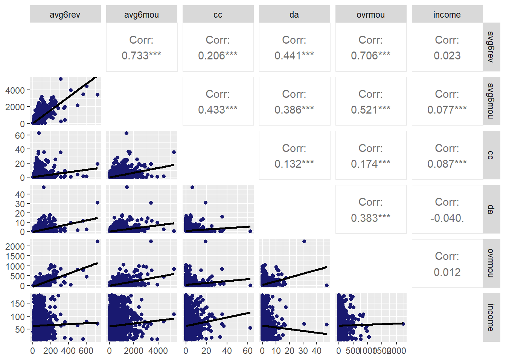

Topic 4 Targeting and Retaining Customers
4.1 R Packages and Datasets for Topic 4
library(ggplot2) # Advanced graphing capabilities
library(tidyr) # Easier programming
library(GGally) # Scatterplot matrix
library(flextable) # Better HTML Tables
library(htmlTable) # Better HTML Tables
library(jtools) # Concise regression results
library(huxtable) # Nice tables using jtools
library(dplyr) # Easier programming
library(caret) # Create data partitions
library(cowplot)
load("Topic04/bankmktg.rdata")
load("Topic04/telecom.rdata")4.2 Targeting Customers
- One-to-One Marketing
- Time consuming
- Costly
- Mass Marketing
- Customer needs not being met
- Target Marketing
- Market to those likely to…
4.2.1 Goal
Target customers with the highest likelihood of a favorable outcome using explanatory variables
- Outcome variable could be:
- Purchase
- Sales
- Costs
- Profitability
- CLV
- Explanatory variables could be:
- Demographics
- Behaviors
- Usage
- Lifestyles
The outcome variable will dictate the type of analysis we can perform
- Continuous outcome variables have a meaningful magnitude
- Use linear regression
- Categorical outcome variables do not have a meaningful magnitude
- Use logistic regression
4.3 Retaining Customers
Importance of retention:
Reducing defections \(5\%\) boosts profits \(25\%\) to \(85\%\). — Frederick F. Reichheld and W. Earl Sasser, Jr.
4.3.1 Goal
Identify factors (i.e., independent variables) that increase the likelihood of retention (or decrease the likelihood of churn)
- Retention (or Churn) is the outcome or dependent variable
- DV = Binary, so Method = Logistic Regression
4.4 Targeting Customers (Linear Regression) Example
4.4.1 Overview
- Customer revenue, usage, and demographics for a cell phone provider
- DV:
- Mean monthly revenue (prior 6 months),
avg6rev
- Mean monthly revenue (prior 6 months),
- IVs:
- Mean monthly minutes (prior 6 months),
avg6mou - Mean monthly customer care calls,
cc - Mean monthly directory assistance calls,
da - Mean monthly overage minutes,
ovrmou - Household income (dollars),
income - Own home (Yes; No),
own
- Mean monthly minutes (prior 6 months),
4.4.2 Summarize Data
- Useful to examine data prior to specifying the model
- Summary Statistics
Table 4.1: Summary Statistics (R code)
avg6rev avg6mou cc da Min. : 2.00 Min. : 0.0 Min. : 0.000 Min. : 0.0000 1st Qu.: 33.00 1st Qu.: 143.0 1st Qu.: 0.000 1st Qu.: 0.0000 Median : 45.00 Median : 324.0 Median : 0.000 Median : 0.0000 Mean : 57.36 Mean : 466.9 Mean : 1.484 Mean : 0.7267 3rd Qu.: 68.00 3rd Qu.: 615.8 3rd Qu.: 1.000 3rd Qu.: 1.0000 Max. :726.00 Max. :5321.0 Max. :63.000 Max. :48.0000 ovrmou income own Min. : 0.00 Min. : 10.00 No : 709 1st Qu.: 0.00 1st Qu.: 38.00 Yes:1673 Median : 1.00 Median : 59.00 Mean : 41.17 Mean : 63.54 3rd Qu.: 37.00 3rd Qu.: 83.00 Max. :2239.00 Max. :180.00- Scatterplot Matrix (with Correlations)

Figure 4.1: Scatterplot Matrix with Correlations (R code)
- Summary Statistics
4.4.3 Model Specification
- Goal: Determine what behaviors and demographics are associated with high revenue customers
- IVs are expected to be ones that are related to revenue
- Model: \(avg6rev=\alpha+\beta_1avg6mou+\beta_2cc+\beta_3da+\beta_4ovrmou+\beta_5income+\beta_6own\)
4.4.4 Model Interpretation
4.4.4.1 Results
Call:
lm(formula = avg6rev ~ avg6mou + cc + da + ovrmou + income +
own, data = telecom)
Residuals:
Min 1Q Median 3Q Max
-151.670 -10.263 -1.447 7.212 289.046
Coefficients:
Estimate Std. Error t value Pr(>|t|)
(Intercept) 31.593234 1.403596 22.509 < 2e-16 ***
avg6mou 0.048721 0.001377 35.371 < 2e-16 ***
cc -1.279358 0.149733 -8.544 < 2e-16 ***
da 1.813647 0.267716 6.775 1.57e-11 ***
ovrmou 0.178307 0.005823 30.621 < 2e-16 ***
income -0.013760 0.014379 -0.957 0.338674
ownYes -4.080660 1.118011 -3.650 0.000268 ***
---
Signif. codes: 0 '***' 0.001 '**' 0.01 '*' 0.05 '.' 0.1 ' ' 1
Residual standard error: 24.76 on 2375 degrees of freedom
Multiple R-squared: 0.6995, Adjusted R-squared: 0.6987
F-statistic: 921.4 on 6 and 2375 DF, p-value: < 2.2e-16\(avg6rev=31.593+.049avg6mou-1.279cc+1.814da+.178ovrmou-.014income-4.081own\)
4.4.4.2 Testing Overall Model Significance
- Relationship between DV and combined effects of IVs
- \(H_0: \text{all }\beta_k=0\) vs. \(H_a: \text{at least one }\beta_k\ne0\)
- Use F-statistic to test
- Conclusion: With a F-statistic of \(921.4\) and a \(p<.001\), we conclude that at least one \(\beta_k\) is significant
4.4.4.3 Assessing overall model fit
- How much variation in the DV is explained by the model
- Use \(R^2\) to assess
- Use Adjusted \(R^2\) to compare models
- Conclusion: Based on the \(R^2\), about \(70\%\) of the variance in
avg6revis explained by the model
4.4.4.4 Interpret Individual IVs
- Relationship between DV and each IV
- \(H_0: \beta_k=0\) vs. \(H_a: \beta_k\ne0\)
- Interpret significant relationships
avg6mou- With \(p<.001\),
avg6mouhas a significant effect onavg6rev. - A one unit increase in
avg6mouis predicted to increaseavg6revby \(.049\) units.
- With \(p<.001\),
cc- With \(p<.001\),
cchas a significant effect onavg6rev. - A one unit increase in
ccis predicted to decreaseavg6revby \(1.279\) units.
- With \(p<.001\),
da- With \(p<.001\),
dahas a significant effect onavg6rev. - A one unit increase in
dais predicted to increaseavg6revby \(1.814\) units.
- With \(p<.001\),
ovrmou- With \(p<.001\),
ovrmouhas a significant effect onavg6rev. - A one unit increase in
ovrmouis predicted to increaseavg6revby \(.017\) units.
- With \(p<.001\),
own- With \(p<.001\),
ownhas a significant effect onavg6rev. - Those that own their home have \(4.081\) units less revenue per month than those that do not.
- With \(p<.001\),
- A standardized \(\beta\) is the effect of a single standard deviation change in the IV on the DV
- Higher absolute values are more important
- Conclusion:
avg6mouis the biggest driver of avg6rev
Table 4.3: Standardized Beta Coefficients (R code) Std.Beta (Intercept) 0 avg6mou 0.5264 cc -0.1071 da 0.0849 ovrmou 0.4153 income -0.0108 ownYes -0.0414 - Sometimes helps to visually examine the IVs for interpretation
- Plots show predicted DV at different levels of significant IVs
4.5 R Code
Figure 4.1
ggpairs(telecom[,1:6], # Select first 6 columns of data set
lower=list(continuous=
wrap("smooth", method="lm", se=FALSE, # Add fit line
color="midnightblue")), # Set dot color
diag=list(continuous="blankDiag")) # Set diagonals to be blankTable 4.1
summary(telecom)Table 4.2
target <- lm(avg6rev ~ avg6mou + cc + da + ovrmou + income + own,
data=telecom)
summary(target)Table ??
```r
# Use user-defined function 'lm_beta.R'
source("Topic02/lm_beta.R")
htmlTable(lm_beta(target, digits=4))
```